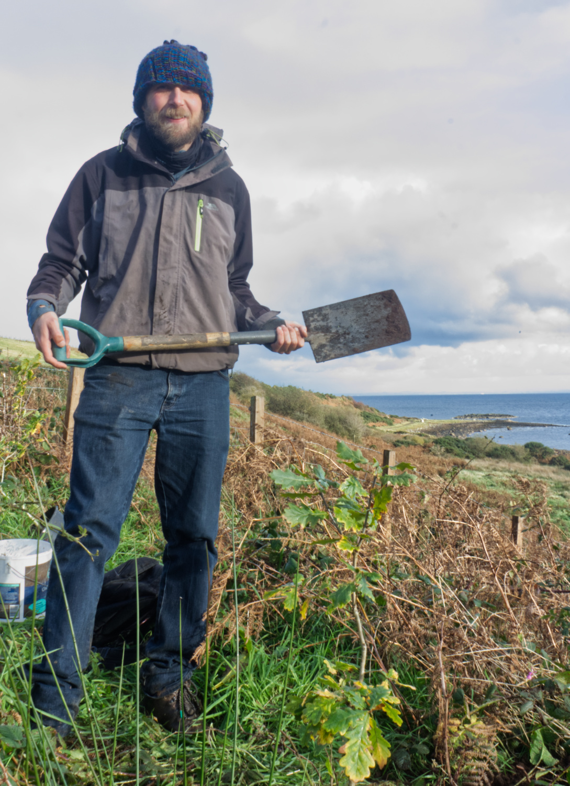

Hi everybody. What’s the craic. It’s Simon here, and I’m writing to you from THE FUTURE!!!! That’s right - the year is 2070 and I am waaay into my eighties now. Oh how the decades do fly by!
I just wanted to say a big and genuinely heartfelt thanks to every single one of you for working ever so hard towards building the sustainable society we were all dreaming about. You absolute legends. You really turned it around at the last minute, there. Things were looking a bit choppy in the Twenties and for a while I personally did not think the penny was going to drop but that just goes to show what shit all I know!
When I reread that article I wrote 51 years ago, I remember how fanciful it all seemed. I would never actually have dreamed we’d replace most of the bracken with hemp but here we are - the island is covered in swathes of the green stuff. We make biodegradable plastic, fabric, ropes, clothes and even insulated bricks from hemp. It doesn’t matter if it breaks down as we just grow even more, and it turns into compost.
The whole hemp industry employs loads of people, and that’s not the only livelihood that can be taken up by our young workforce. We also have our local diverse native woodland regeneration and conservation program. All the diverse trees we planted over the decades are starting to really come into their own and Arran is starting to look like the temperate rainforest it once was long before I was born. The land is teeming with life once again.
 Me, planting an oak tree fifty years ago.We have jobs in horticulture, regenerative agriculture, woodland management, sustainable production, fishermen, foragers, artisans, craftspeople, joiners, carpenters, architects - the list goes on and on and on and I couldn’t possibly do it justice in this article. We also have a dedicated and well resourced team of care workers to look after those in their later years, such as myself! But to be honest, we don’t have too many chronic illnesses like diabetes, heart and lung disease as we did at the start of the century, as people have great physical and mental health and live long and action packed lives. We now prevent these health issues rather than cure them.
We have our own Arran grid that is completely run off solar and tidal and wind farms and whatever the hell else they’ve invented since then. As we were harvesting all those trees back in the twenties, we stopped for a minute and thought “why are we shipping these off the island?” So we started turning them into small kit houses and tiny houses - you know, small and cosy, made of timber and hemp bricks but really well done and well insulated. They weren’t built for profit so no corners were cut and we built them for everyone. We also spaced them all out and gave each property an acre, so people have started gardens and have their own wee bit of land to look after.
We have fleets of free ebikes, powered on renewables, so people can just spend the time they aren’t contributing to the local community enjoying this most beautiful of places. Residents and visitors alike are just generally are having a brilliant time in the outdoors and exploring the sunken village fronts of course! (The seafronts of the old Arran villages went underwater so, like the Gaelic speakers, we took the hills). It does still rain, of course, but - much like the woodlands in spring or an Arran sunset - the Arts and Crafts scene is a riot of colour. There are so many pastimes and hobbies for people to get involved with, and this is tied in with our livelihoods. We also have a monorail that goes round the island. There are still leftover cars, but after the oil crash we have to ration petrol. As public transport is so great, there is not really any other use for cars except rally competitions.
The population of Arran is now 18,000, and it’s a diverse mix of people who have migrated from all over the world. We also receive many visitors who stay in our network of sustainably built eco lodges in brilliantly situated locations around the island. Then they go off up the west coast because , you understand, the transformation has happened all up the west coast of Scotland and beyond. We have ferries running east to Ayrshire, north and west to Kintyre, south to the island of Ireland and the independent northern regions of England. Visitors are generally very complimentary about how efficiently the ferry services are run.
Last but not least - YES, you guessed it, we all grow our own food now in our network of regenerative farms, gardens and our community gardens. We have grown food forests and built biodomes to grow tropical plants too and there are foraging opportunities everywhere. We also have pigs and cows and sheep and chickens and geese and deer and alpacas and many more animals and they’re all running around FREE in our forests and diverse meadows, up the glens and wherever they please, mixing up nature and building topsoil as they’ve aye done for millennia before. I should add that we built really good fences to stop them munching on our horticulture, but it doesn’t really matter as there’s horticulture everywhere. There are bees aplenty too so no shortage of Arran honey from one of our employed beekeepers. There are milk vending machines all around the island, and it’s used to make butter and lots of different types of cheese. We’re a net exporter of food and occasionally import exotic goods that have arrived by sailing ship.
In fact, I’d like to take a moment to give an extra thanks to the animals that have lived and died too, along with you people - they helped us to regenerate the soil and sequester carbon from the atmosphere into topsoil, averting the topsoil depletion crisis, so we could grow all that hemp and plant diverse forests. I also cannot tell you how good Arran charcuterie tastes. Just wait til you get here.
So a great big thank you to all of you brilliant people of The Arran Community.
Anyway I’m off to enjoy a round of local Arran Tapas and maybe a glass of Local Beer from one of our many breweries. Or perhaps even some wine from one of our vineyards. Of course I’ll be enjoying seafood because our seas are teeming with fish again. That employs loads of people, don’t get me started on the amount of livelihoods having a healthy marine environment created. I just need to choose which of the several tapas bars in Upper Whiting Bay to go to.
Oh the Arran Green Map! It’s printed on hemp paper using ink from local natural materials. It’s just called the Arran Map now. Which just leaves me to thank all of you for donating after reading this article - you helped me to keep giving free promotion to all the people who made this happen.
Catch ye!